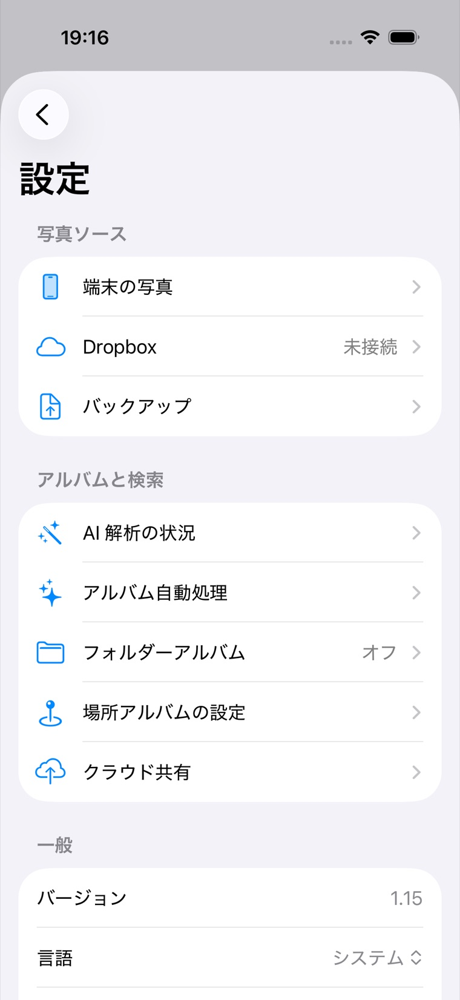

MosaicPhotos ヘルプ / 設定
設定（電源・通信・キャッシュ・表示）
ホーム右下の歯車から開きます。よく使う項目をまとめました。

設定は「写真ソース」「アルバムと検索」「一般」にグループ分けされています。 AI の進み具合はAI 解析の状況、バックアップは写真ソース → バックアップから。
設定の構成
| グループ | 主な項目 |
|---|---|
| Photo Sources | 端末の写真（On-Device Photos）/ Dropbox / バックアップ（Backup） |
| Albums & Search | AI 解析の状況（進捗・今すぐ解析・説明の確認）/ Auto Albums（AI・旅行アルバム＋AI 処理のタイミング）/ Folder Albums / Places（場所） |
| General | バージョン / 言語 / Background & Battery / Photo Grid / Storage / Licenses / ヘルプ |
| Developer Options | 開発者向けの詳細診断（通常は不要） |
AI 解析の状況（進み具合の確認）
設定 → Albums & Search → AI 解析の状況で、各解析（意味検索の索引・シーンタグ・AI 説明文・顔スキャン）の 進捗（済み枚数／全体）と最終実行時刻を確認できます。「動いているのか分からない」ときはまずここを見てください。
- 今すぐ解析：その場で 30 分だけ処理を進めます（充電が必要）。
- 説明を確認：生成された AI 説明文を写真と並べて一覧できます（説明文はお気に入りを中心とした重要な写真に生成）。
AI 処理のタイミング（いつ動かすか）
重い処理（写真の索引付け・顔スキャン・AI アルバムの本確定）をいつ進めるかは、 次の4 つの設定の組み合わせで決まります。すべての条件を満たしたときだけ動きます。
| 設定 | 場所 | 選択肢 | 既定 |
|---|---|---|---|
| 自動で解析する | 設定 → Auto Albums | オン / オフ | オン |
| 画像分析を控えめに動かす | 設定 → Auto Albums | ON / OFF | ON |
| Power（電源） | 設定 → General → Background & Battery | 充電中のみ / 常に / オフ | 充電中のみ |
| Network（通信） | 同上 | Wi-Fi のみ / モバイル通信も / Wi-Fi（低データ除く）/ オフ | Wi-Fi のみ |
「画像分析を控えめに動かす」とは
| 設定 | アプリを使っている間 | 他アプリ利用中・ロック中 |
|---|---|---|
| ON（既定・おすすめ） | 動かしません | 動きます |
| OFF | 20 秒 操作がなければ動きます（画面に触れると即停止） | 動きます |
ON なら閲覧中に重くなることがありません。OFF にすると索引が早く仕上がりますが、 放置している間に処理が始まるため、短い引っかかりを感じることがあります。
設定の組み合わせと動作
○=動く / ✗=動かない（自動で解析する＝オン、低電力モード OFF が前提）。
| 状況 | 端末写真の解析 | クラウド写真の解析 | 同期・バックアップ |
|---|---|---|---|
| 既定・充電中・Wi-Fi・アプリを閉じている | ○ | ○ | ○ |
| 既定・充電中・Wi-Fi・アプリ操作中 | ✗ | ✗ | ○ |
| 既定・電源なし・Wi-Fi・アプリを閉じている | ✗ | ✗ | ✗ |
| 既定・充電中・モバイル通信・アプリを閉じている | ○ | ✗ | ✗ |
| 控えめ OFF・充電中・Wi-Fi・アプリを 20 秒放置 | ○ | ○ | ○ |
| 電源「常に」・電源なし・Wi-Fi・アプリを閉じている | ○ | ○ | ○ |
| 通信「モバイルも」・充電中・モバイル通信・アプリを閉じている | ○ | ○ | ○ |
| 自動で解析する＝オフ | ✗ | ✗ | ○ |
端末内の写真の解析（顔認識・シーンタグ・CLIP）は通信を使いません。
そのため Wi-Fi が無くても進みます。通信の設定が効くのは、クラウド写真の解析・同期・
バックアップ・地名の補正など実際に通信する処理だけです。
どの設定でも、低電力モード中とメモリが逼迫している間は動きません（安全弁）。
同じ画面の 「今すぐ処理」を押すと、その場で 30 分だけ処理を進められます（充電が必要）。
Background & Battery（アプリ横断の電源・通信）
設定 → General → Background & Battery。上の表の 3 つ目・4 つ目の軸がここにあります。 AI の索引だけでなく、自動アルバム生成・場所スキャン・Dropbox 同期・バックアップなど アプリ全体のバックグラウンド動作にまとめて効きます。
- Power（電源）：充電中のみ（既定）/ 常に / オフ。「充電中のみ」は低電力モードが切れているときだけ動きます。
- Network（通信）：モバイル通信も許可 / Wi-Fi のみ（既定）/ Wi-Fi（低データモードは除く）/ オフ。
いま見ている・開いている写真は常に取得されます（サムネイルの先読みを含む）。
制限されるのは“自動の裏側の通信・処理”だけなので、閲覧が止まることはありません。
Photo Grid（表示の密度）
月グループ表示の詰め具合を選べます（細：1 行 / ふつう：3 行 / 粗：5 行）。 値を大きくすると日付の見出しが減り、より密に表示されます。詳しくは 基本の見かた。
Storage（キャッシュ）
- サムネイル・本体画像のキャッシュ容量の上限を設定できます。
- 大規模なライブラリでも安定するよう、メモリは状況に応じて自動調整されます。
その他
- 言語：System / 日本語 / English を切り替えられます。
- Licenses：本アプリと同梱物のライセンス表記。
- ヘルプ：このオンラインヘルプを開きます。